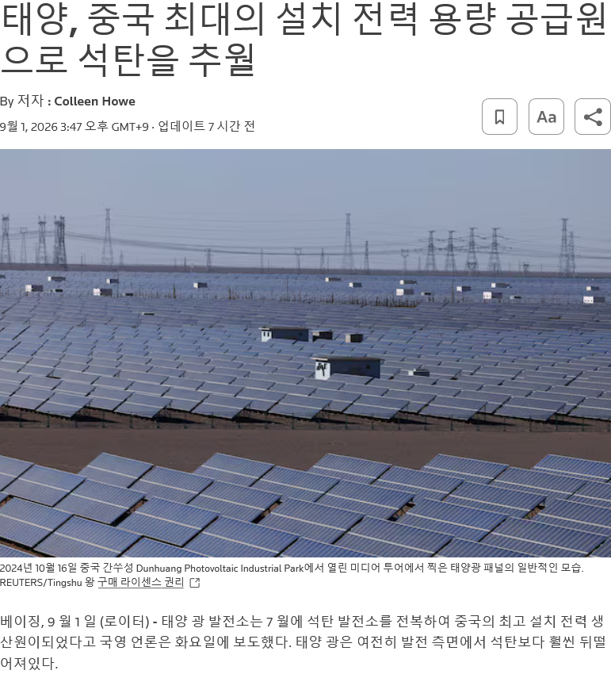

https://bbs.ruliweb.com/best/board/300143/read/76523334

https://www.reuters.com/business/energy/solar-overtakes-coal-chinas-largest-source-installed-power-capacity-2026-09-01/
미친듯이 만들다보니 설비용량 기준으로 석탄의 발전량을 넘겨버림
다만 실제 발전량 기준으론 여전히 석탄이 우위.
중국은 사람 안사는 사막쪽 지역에 태양광 패널을 몇백 제곱키로미터 단위로 펼쳐놨음
중국은 남는땅도 많고 사막지역도 있고 하니까 되는거지
한국 사이즈의 국토로는 태양광이 보조수단이지 그렇게 캐리 할 수 없음